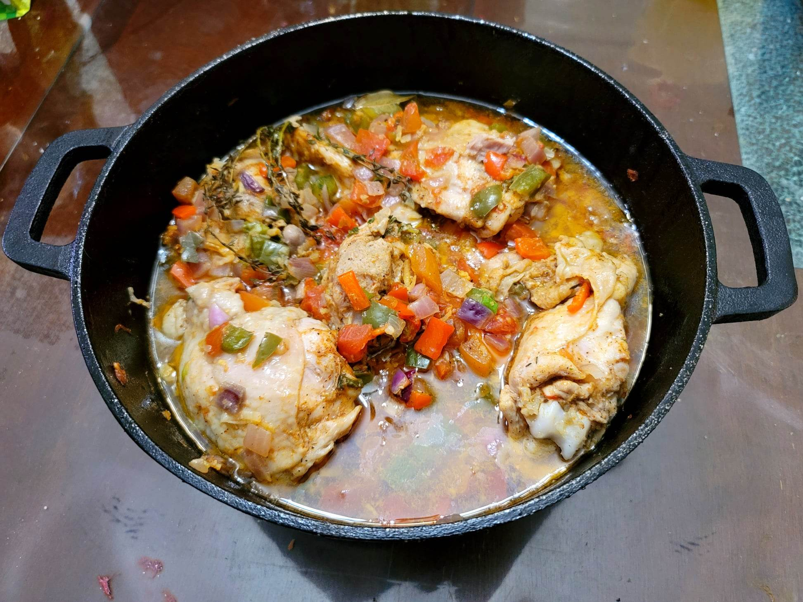

Kedjenou Chicken

Ingredients:
Marinade:
- 4-5 lb Chicken thighs, skin-on, bone-in
- 2 Red onions, diced
- 2 Scallions, finely sliced
- 1 tbsp Ginger, grated
- 1 tbsp Garlic, grated
- 2 sprigs Thyme
- 1 Bay leaf
- 2-3 Scotch bonnet or habanero chilies, whole, stabbed all around with a fork
- 1 tsp Smoked paprika
- 1/2 tbsp Chicken bouillon
- Salt, to taste
- Black pepper, to taste
Other Ingredients:
- 1 Red bell pepper or Green bell pepper, or half red half green, diced
- 4 medium Tomatoes, diced
Instructions:
- Combine all the marinade ingredients into a container and let marinate overnight.
- Preheat an oven to 350 degrees Fahrenheit.
- Add the chicken along with the marinade and the remaining ingredients to a dutch oven. Mix to combine and place cover. Bake in the oven for about 1 hour, shaking the pot once or twice throughout cooking without removing the lid.
- Remove from the oven and serve immediately.